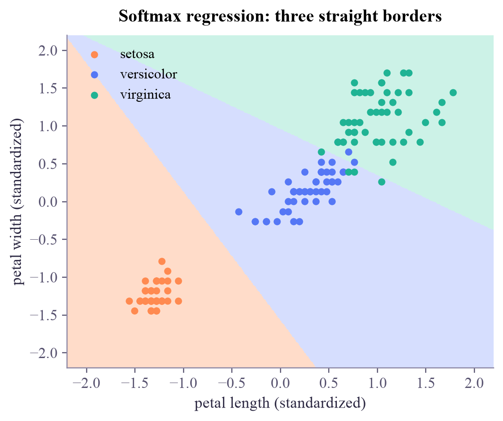

probability for the true class 1.00 -> cross-entropy -log p = 0.000 probability for the true class 0.90 -> cross-entropy -log p = 0.105 probability for the true class 0.50 -> cross-entropy -log p = 0.693 probability for the true class 0.25 -> cross-entropy -log p = 1.386 probability for the true class 0.01 -> cross-entropy -log p = 4.605
Machine Learning
 about 11 min
about 11 min ml-w3d2.ipynb
ml-w3d2.ipynb
Cross-entropy and softmax
Why classifiers are trained with cross-entropy rather than squared error, and how softmax turns any number of scores into probabilities.
In this lesson you will
- Read cross-entropy as surprise: of the probability given to the right answer
- Explain why cross-entropy trains classifiers better than squared error
- Turn scores into probabilities with softmax, and train a 3-class model in PyTorch
Warm-up
1 minHow surprised should a model be?

Yesterday the cross-entropy loss appeared in one line. It deserves more: it's the loss behind almost every classifier you'll ever train, from logistic regression to giant language models to quantum classifiers. Today you'll see what it means, why it beats squared error, and how it handles more than two classes.
Big idea
4 minSurprise, its push, and softmax
Cross-entropy is surprise. If the model gave the correct class probability , its loss on that example is
: no surprise, loss 0. : loss 0.69. : loss 4.6, a big surprise. Averaged over the data, it rewards models that put high probability on the truth.
Why not squared error? The gradient decides how hard each training step pushes. With a sigmoid output and cross-entropy, the push on the score is beautifully simple:
Confidently wrong (, )? A full push of almost 1. With squared error, the sigmoid's flat tail multiplies the gradient by almost zero, so a confidently wrong model barely moves. Cross-entropy never stalls on its worst mistakes.
More than two classes: softmax. Give each class a score (the logits), then
Every is positive, they add up to 1, and the biggest score gets the biggest probability. Dividing the scores by a temperature first makes the model more confident () or more cautious (). With two classes, softmax is exactly the sigmoid of the difference of the scores.
A classifier outputs scores; softmax turns them into probabilities; cross-entropy measures the surprise at the truth. In PyTorch that's nn.Linear(d, K) plus nn.CrossEntropyLoss().
Play
3 minFeel the loss
Now three scores in, three probabilities out:
Finally, a classifier for three classes, trained with softmax and cross-entropy (each step uses exactly the rule):
Try this
In the mixer, set all three scores equal: you get each, whatever the value. Adding the same number to every score changes nothing at all. Then lower the temperature and watch the winner take almost everything.
Code
2 minCross-entropy and softmax in PyTorch
The notebook for this lessonEvery code cell below, with what it printed, is in
ml-w3d2.ipynb. To change the code and run it yourself, open the notebook in Google Colab (free, in your browser) or download it for your own Jupyter.import numpy as np
import torch
torch.set_num_threads(1)
for p in [1.0, 0.9, 0.5, 0.25, 0.01]:
print(f"probability for the true class {p:4.2f} -> cross-entropy -log p = {-np.log(p) + 0:.3f}")What it printed in the notebook
for name in ["squared error", "cross-entropy"]:
z = torch.tensor(-4.0, requires_grad=True)
p = torch.sigmoid(z)
loss = (p - 1) ** 2 if name == "squared error" else -torch.log(p)
loss.backward()
print(f"{name:>14}: loss {loss.item():.3f}, gradient dL/dz = {z.grad.item():+.4f}")
print("Cross-entropy's gradient is simply p - y = 0.018 - 1. Squared error's is tiny: learning would crawl.")What it printed in the notebook
squared error: loss 0.964, gradient dL/dz = -0.0347 cross-entropy: loss 4.018, gradient dL/dz = -0.9820 Cross-entropy's gradient is simply p - y = 0.018 - 1. Squared error's is tiny: learning would crawl.
z = torch.tensor([2.0, 1.0, 0.1])
for T in [0.5, 1.0, 3.0]:
p = torch.softmax(z / T, dim=0)
print(f"T = {T}: probabilities {p.numpy().round(3)} (sum {p.sum().item():.2f})")What it printed in the notebook
T = 0.5: probabilities [0.864 0.117 0.019] (sum 1.00) T = 1.0: probabilities [0.659 0.242 0.099] (sum 1.00) T = 3.0: probabilities [0.445 0.319 0.236] (sum 1.00)
import matplotlib.pyplot as plt
from sklearn.datasets import load_iris
iris = load_iris()
X = torch.tensor(iris.data[:, 2:], dtype=torch.float32) # petal length and width
X = (X - X.mean(dim=0)) / X.std(dim=0)
y = torch.tensor(iris.target)
torch.manual_seed(0)
model = torch.nn.Linear(2, 3)
loss_fn = torch.nn.CrossEntropyLoss()
optimizer = torch.optim.SGD(model.parameters(), lr=0.5)
for step in range(300):
optimizer.zero_grad()
loss = loss_fn(model(X), y)
loss.backward()
optimizer.step()
with torch.no_grad():
acc = (model(X).argmax(dim=1) == y).float().mean().item()
print(f"cross-entropy {loss.item():.3f}, accuracy {acc:.3f}")
xx, yy = np.meshgrid(np.linspace(-2.2, 2.2, 300), np.linspace(-2.2, 2.2, 300))
with torch.no_grad():
grid = torch.tensor(np.c_[xx.ravel(), yy.ravel()], dtype=torch.float32)
region = model(grid).argmax(dim=1).reshape(xx.shape).numpy()
colors = ["#ff8a50", "#5577f5", "#1fb394"]
plt.figure(figsize=(5.6, 4.4))
plt.contourf(xx, yy, region, levels=[-0.5, 0.5, 1.5, 2.5], colors=["#ffdcc9", "#d6defe", "#ccf2e7"])
for k in range(3):
plt.scatter(X[y == k, 0], X[y == k, 1], s=18, color=colors[k], label=iris.target_names[k])
plt.xlabel("petal length (standardized)")
plt.ylabel("petal width (standardized)")
plt.legend()
plt.title("Softmax regression: three straight borders")
plt.show()What it printed in the notebook
cross-entropy 0.118, accuracy 0.953

Your turn
2 minYour turn: softmax by hand, safely
Write softmax(z) yourself with torch.exp and a sum, and check it against torch.softmax. Then feed it the scores . What breaks, and how does subtracting the largest score first fix it?
def softmax(z):
return z # TODO: exponentiate, then divide by the sum
z = torch.tensor([2.0, 1.0, 0.1])
print("mine: ", softmax(z))
print("PyTorch:", torch.softmax(z, dim=0))Need a hint?
is far beyond the largest number a float can hold. But is the same for every , as the mixer showed. Pick .
Show a solution
def naive_softmax(z):
e = torch.exp(z)
return e / e.sum()
def softmax(z):
e = torch.exp(z - z.max()) # subtracting the max changes nothing mathematically...
return e / e.sum()
z = torch.tensor([2.0, 1.0, 0.1])
print("mine: ", softmax(z))
print("PyTorch:", torch.softmax(z, dim=0))
big = torch.tensor([1000.0, 1001.0, 1002.0])
print("naive on big scores:", naive_softmax(big), " <- exp(1000) overflows to inf, and inf/inf = nan")
print("safe on big scores: ", softmax(big), " <- ...but keeps every exponent small")What it printed in the notebook
mine: tensor([0.6590, 0.2424, 0.0986]) PyTorch: tensor([0.6590, 0.2424, 0.0986]) naive on big scores: tensor([nan, nan, nan]) <- exp(1000) overflows to inf, and inf/inf = nan safe on big scores: tensor([0.0900, 0.2447, 0.6652]) <- ...but keeps every exponent small
Check yourself
2 minQuick check
Question 1 of 4
The model gives the true class a probability of 0.25. What is its cross-entropy on this example?
Question 2 of 4
Why is squared error a poor loss for a sigmoid classifier?
Question 3 of 4
What is softmax of the scores ?
Question 4 of 4
What does
nn.CrossEntropyLoss expect as its two inputs?Wrap-up
1 minToday in one sentence
Quantum link
A quantum classifier gets its probabilities for free: measuring a few qubits gives the probability of each bitstring, and those already add up to 1, like a built-in softmax. The Quantum ML tutorial trains such circuits with exactly this cross-entropy loss.
Go deeper (optional)
ISLP section 4.3.5 (multinomial logistic regression) introduces softmax. For the "surprise" view, look up entropy in information theory: cross-entropy counts how many bits (or nats) of surprise your model suffers on average.
Next in Machine Learning: when one class is rare, and how to train a classifier that still finds it.

That's the lesson!
Tap the button to save it. Short and steady wins.
Next in Machine LearningWhen one class is rare
Marked by mistake? Undo